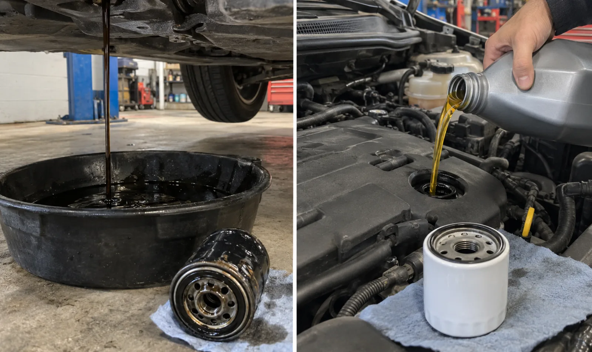

Oil replacement
Old engine oil is drained and replaced with oil suited to the vehicle’s requirements.
Oil change service
Oil and filter changes for cars and light trucks, arranged directly with Jaden. Depending on the vehicle and working conditions, Jaden may come to you or ask you to bring the vehicle to the Port Credit shop.
416-577-8237jadensauthoanddetailing@gmail.com
What the service involves
Old engine oil is drained and replaced with oil suited to the vehicle’s requirements.
The used oil filter is removed and a replacement filter is installed and checked.
Jaden can look for visible leaks or concerns noticed while completing the requested service.
When to contact Jaden
Mobile or shop
Some oil changes can be completed at your location when there is safe, level working space and the vehicle is suitable. Jaden may ask you to bring the vehicle to the Port Credit shop when equipment, access, or conditions make that the better option.
Request an appointment
Call or text with the vehicle’s year, make and model, its location, and any warning light, leak, noise, or maintenance message you have noticed. Appointments and the service location are confirmed directly with Jaden.
Request a quote
Include the year, make and model, your location, and the service needed.